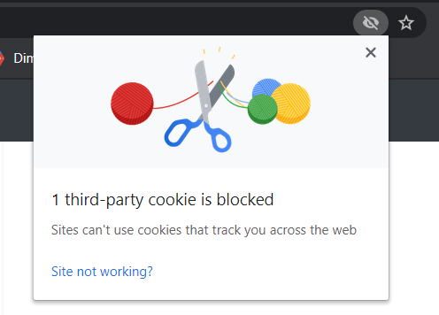

In order to migrate your Universal Analytics tags, the Migration Tool requires access via Google's OAuth procedure. None of your personal or GTM account information is stored or transmitted anywhere.
Having trouble logging in? Make sure 3rd party cookies aren't being blocked.
